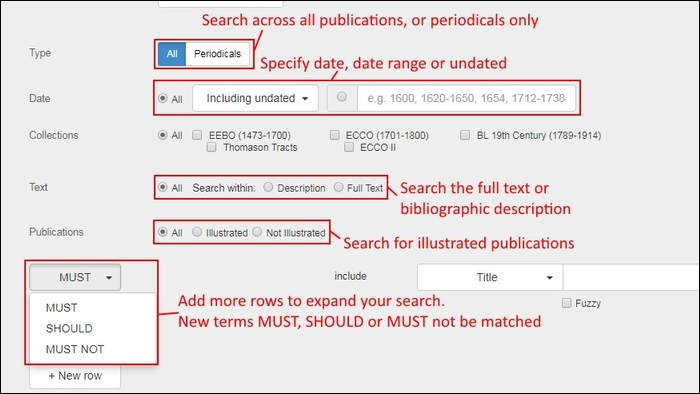
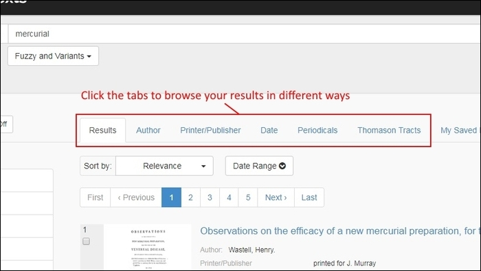
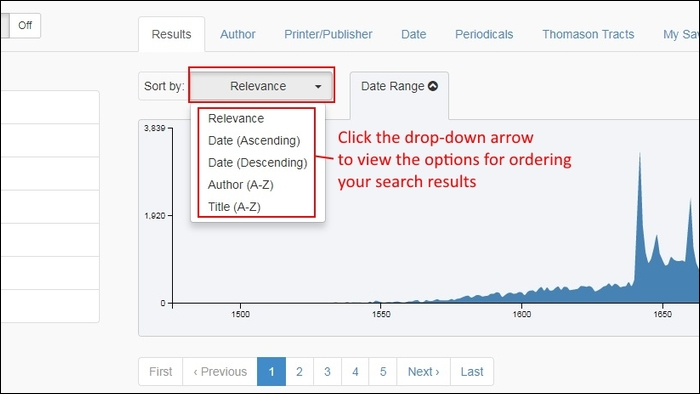
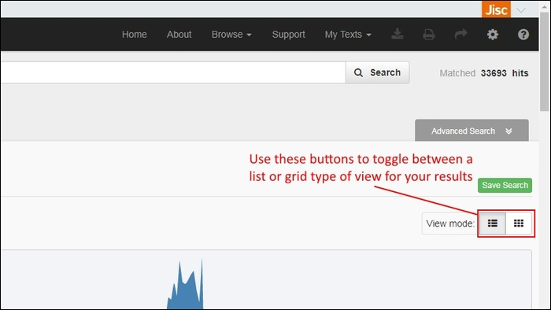
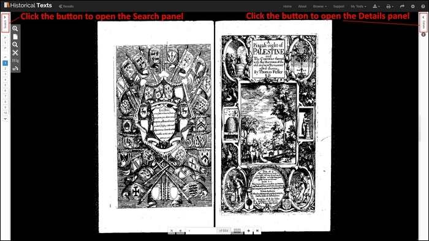

<div class="row">
<div class="col-xs-12 topSpace">
        <div class="sideMenu">
            <div class="title">Support</div>
            <ul>
                <li><a href="/support/">Support Home</a></li>
                <li class="selected"><a href="">Help File</a>
                 <ul>
                        <li><a href="/help#navbar">Navigation bar</a></li>
                        <li><a href="/help#features">Features of the UKMHL Collection</a></li>
						<li><a href="/help#search">Searching</a></li>
                        <li><a href="/help#operators">Operators, regular expressions and reserved characters</a></li>
                        <li><a href="/help#sisualisations">Visualisations</a>
						<ul>
						<li><a href="/help#sunburstdendrogram">Sunbursts and Dendrograms &#45; Body Parts and Medical Conditions</a></li>
						<li><a href="/help#ngram">NGram Viewer</a></li>
						<li><a href="/help#timeline">Timeline</a></li>
						<li><a href="/help#hospitalmap">Hospital Map</a></li>
					    <li><a href="/help#imagewall">Image Wall</a></li>
						</li>
						</ul>
						<li><a href="/help#browse">Browsing</a></li>
						
                        <li><a href="/help#results">Results</a></li>
                        <li><a href="/help#viewer">Viewer</a>
                        <ul>
                        <li><a href="/help#searchpanel">Search panel</a></li>
                        <li><a href="/help#imagepanel">Image panel</a></li>
                        <li><a href="/help#detailspanel">Details panel</a></li>
                        </li>
						</ul>
                        <li><a href="/help#download">Downloading</a></li>
                        <li><a href="/help#stable">Stable URLs</a></li>
                    </ul>
					</li>
<!--                <li><a href="/librarians/">Librarians</a></li>
                <li><a href="/faq/">FAQ</a></li> -->
                <li><a href="/quickref/">Quick Reference Guide</a></li>
<!--                <li><a href="/features/">Features</a></li>				
				</ul>
-->
				</div>

        <div class="support">

            <ol class="breadcrumb">
                <li><a href="/support/">Support Home</a></li>
                <li class="active">Help</li>
            </ol>


		  <h1 id="navbar">Navigation bar</h1>
            <p>There is a black horizontal navigation bar at the top&#45;right of the screen on every page of the Historical Texts Labs site, so you can quickly navigate to any part of the website from any page you are on. Some options are only available on certain pages &#45; for example, the Download, Print and Share buttons are only enabled when you have opened a publication in the Viewer.</p>

			<span class="image">
			
			</span>

		  <h1 id="Features">Features of the UKMHL collection</h1>

					<p><strong>FULL TEXT &#45; </strong>Full text is available for every title in the collection. The text is machine generated using Optical Character Recognition &#40;OCR&#41; software.</p>
                    <p><strong>PDF DOWNLOADS &#45; </strong>PDFs are available for every title, and the PDF for a whole publication can be downloaded directly. These are searchable PDFs.</p>
                    <p><strong>PAGE IMAGE DOWNLOADS &#45; </strong>Full&#45;colour images for every individual page are available and can be downloaded individually in the JPEG format.</p> 
					<p><strong>OTHER DOWNLOAD OPTIONS &#45; </strong>The full text can be downloaded as plain text, or in the ePub format. The bibliographic citation information can be downloaded in the .RIS Reference Manager format.</p>
					<p><strong>VISUALISATIONS</strong> &#45; Unique visualisation tools built specifically for this collection allow searching of the corpus in hitherto&#45;untapped ways.</p>
        
       	  <h1 id="search">Searching</h1>
            

            <p>We are using <a href="http://www.elasticsearch.org">Elasticsearch</a> open source software to index the data in Historical Texts Labs.</p>
            <p>To run a search, enter your search terms in the Search box and select the &quot;Search&quot; button. By default, this will search all of the information in the bibliographic records as well as the full text. The search software is not case&#45;sensitive so &quot;Shakespeare&quot; will return the same results as &quot;shakespeare&quot;. The number of matching results will be shown to the right of the Search box.</p>
			<p><i>It is worth noting that you can see where in a publication your search terms match using the &quot;Pages&quot; tab in the &quot;Search&quot; panel, within the Viewer &#45; and that you can then search for new terms within the publication using the Search box at the top of the &quot;Pages&quot; tab. For more information, see the section on the <a href="/help#viewer">Viewer</a></i>. 
            <p>If you do want to limit your search to a particular field &#40;e.g. Title, Author or Printer&#47;Publisher&#41;, you can do so using the drop&#45;down list to the left of the Search box.</p>
            <p>The options available are&#58;</p>
            <ul>
              <li>All</li>
              <li>Title</li>
              <li>Author</li>
              <li>Printer/Publisher</li>
              <li>Place of Publication</li>
         <!-- <li>Bibliographic number</li> -->
              <li>Language</li>
         <!-- <li>Illustration description</li> -->
              <li>Subject</li>
              <li>Genre</li>
            </ul>

            <h2>Author</h2>
            <p>You can enter the author name in either &quot;First Name, Last Name&quot; or &quot;Last Name, First Name&quot; formats and it will find the same results.</p>
            <pre>
                Charles, Story
                Story, Charles
            </pre>

   <!--NEED SOME INFO ON THE SUBJECT OPTIONS HERE</p> 
            <h2>Subject</h2>
 <p>NEED SOME INFO ON THE SUBJECT OPTIONS HERE</p>  -->   

   
          <h2>Genre&#47;material type</h2>
            <p>Genre&#47;material type describes both the form of the item and the content in UKMHL. <!--NEED SOME INFO ON THE GENRE OPTIONS HERE</p> -->

  
<!-- POSSIBLE TO GET A SPREADSHEET LIST LIKE HT HERE? <p>Download the full list of <a href="/files/Genres-in-HT.xlsx" class="external"> genres</a> &#40;XLXS, 501KB&#41;.</p> -->

          <h2>Building up complex queries</h2>
            <p>To build up a complex query you can either type your query into the search box directly using Boolean operators, or use the &quot;Add Another Row&quot; feature. Simply select  &quot;Advanced Search&quot; on the Search page to show additional search features. From here you can add new rows, and specify whether your terms MUST, SHOULD or MUST NOT appear in your results.</p>
            <p>The first clause of the search &#40;in the main search box&#41; is a MUST &#45; so the results must include whatever goes in that first box. This means that whatever else goes in the search, you are essentially starting from a situation where the search in the first box is compulsory. This means that adding a SHOULD clause to this cannot increase the set of results. Adding a SHOULD clause cannot reduce the set of results either &#40;as the clause is optional&#41;.</p>

<p>This means that adding a SHOULD clause does not change the total number of results. What it does do is re&#45;order the results when using the relevance ranking, so those items matching the SHOULD clauses come to the top.</p>


            <hr />
	   
               
          <h1 id="operators">Operators, Regular Expressions and Reserved Characters </h1>
            <h2>Boolean operators</h2>
            <p>The familiar Boolean operators AND, OR, NOT &#40;alternatively you can write them as &amp;&amp;, &#124;&#124;, &#33;&#41; are supported and can be entered directly into the search box. NOT takes precedence over AND, which takes precendence over OR and you can combine these operators with brackets. These operators can affect the terms to the left and right of them.</p>
            <p>You can also use the prefered Elasticsearch operators &lsquo;&#43;&rsquo; &#40;which means the term MUST be present&#41; and &lsquo;&#45;&rsquo; &#40;which means the term MUST NOT be present&#41;.  These operators can only affect the terms to the right of them.</p>
            <p>The example below finds all results for &quot;shakespeare&quot; without &quot;venice&quot; in.</p>
            <pre>
                shakespeare &#45;venice</pre>

		  <p>By default, any terms you enter in the search box MUST be present. For instance, all of the searches below are identical&#58;</p>
            <pre>
           	shakespeare &#45;venice ode</pre>
			<pre>
            	&#43;shakespeare &#45;venice ode</pre>
			<pre>
            	&#43;shakespeare &#45;venice &#43;ode</pre>

          <h2>Wildcard operators</h2>
            <p>Two wildcard operators are available&#58;</p>
            <pre>
                &#42; &#61; Match any character, including no character
                &#63; &#61; Match any single character&#59; will not match no character</pre>
            <p>Please avoid wildcard characters occurring at or before the third position as they may produce too many unrelated matches.</p>

          <h2>Proximity operators</h2>
            <p>Proximity operators enable you to specify the distance &#40;in number of words&#41; your search terms are from each other in the text. You can specify the number using a tilda and a number after the term itself, to widen the proximity increase the number. </p>
            <p>The example below finds king and queen within 5 words or less of each other.</p>
            <pre>
                &quot;king queen&quot;&#126;5
            </pre>

          <h2>Regular expressions</h2>
            <p>Searching using regular expressions is supported and terms can be entered directly into the search box wrapped in forward slashes &quot;/&quot;. Historical Texts uses Elasticsearch software to index the data and the full list of <a href="http://www.elasticsearch.org/guide/en/elasticsearch/reference/current/query-dsl-regexp-query.html#query-dsl-regexp-query">supported operators for regular expressions</a> can be found on the Elasticsearch website. </p>
            <p>The example below shows a regular expression to look for the word William.</p>
            <pre>
                &#47;W&#91;ilam&#93;&#123;0,6&#125;&#47;
            </pre>
            <div class="panel panel-default">
              <div class="panel-heading">
                <h3 class="panel-title">Regular expressions support</h3>
              </div>
              <div class="panel-body"> Support information and tutorials to help you construct regular expressions can be found in a range of places on the web, for example at the <a href="http://regexone.com/">Regex One</a> site and <a href="http://www.regular-expressions.info/tutorial.html">Regular Expressions Info</a>. </div>
            </div>

          <h2>Reserved characters</h2>
            <p>Certain characters function as operators in the system and if you want to use them in your search query, but not as an operator, then you will need to escape them with a leading backslash. </p>
            <p>The reserved characters are:</p>
            <pre>
                &#43; &#45; &amp;&amp; &#124;&#124; &#33; &#40; &#41; &#123; &#125; &#91; &#93; &#94; &quot; &#126; &#42; &#63; &#58; &#92; &#47;</pre>


                <h2>Fuzzy searching</h2>
                <p>Fuzzy searching enables you to search for terms that are similar to, but not exactly like our search terms.</p>
                <p>&quot;Fuzziness&quot; is measured in terms of the number of edits &#40;insertions and deletions&#41; between one term and another. You can specify the number of edits using a tilda and a number after the term itself.</p>
                <p>The example below finds &quot;king&quot;, and all other terms within a single edit of the word &quot;king&quot;:</p>
                <pre>king&#126;1</pre>
                <p>The maximum &quot;fuzziness&quot; supported is 2.<br />
                  &#40;obviously you can use the &quot;Fuzzy search&quot; checkbox for fuzzy searching but the operator is also supported in the main search box and allows you to apply the &quot;fuzziness&quot; to only certain terms within your search&#41;</p>
				  
				<h2>Variant Forms and Misspelling searching</h2>

				<p>Users can also choose options for &ldquo;Variant Forms&rdquo;, &ldquo;Variant Spellings&rdquo;, &ldquo;Misspellings&rdquo; and &ldquo;Printer Replacements&rdquo; by clicking the &ldquo;Fuzzy and Variants&rdquo; drop&#45;down button and ticking the desired options.</p> 
                <p>All the Variant words that are added to the search will appear below the Search bar, colour&#45;coded by Variant type. You can remove Variant words from your search by clicking the &quot;x&quot; at the end of the icon.</p>

                <p>We recommend that users not use both the &quot;Fuzzy&quot; and &quot;Variants&quot; options at the same time, as this may yield unpredictable search results.</p>

				<span class="image">
				
				</span>
				
				<h2>Grouping</h2>
                <p> You can group together terms or search clauses together using parentheses. For example&#58;</p>
                <pre>shakespeare AND &#40;&#40;merchant AND venice&#41; OR &#40;king AND lear&#41;&#41;</pre>

                <h2>Field searching</h2>
                  <p>You can search specific fields by using the field name followed by a colon then the search term. For example</p>
                <pre>title&#95;all&#95;text&#58;shakespeare</pre>
                <p>You can use this in combination with other operators. For example&#58;</p>
                <pre>title&#95;all&#95;text&#58;&#40;shakespeare lear&#41;</pre>
                <pre>title&#95;all&#95;text&#58;lear AND author&#95;all&#95;text&#58;shakespeare&#126;2</pre>

                <p>You can also search for the presence&#47;absence of fields using &#39;&#95;missing&#95;&#39; and &#39;&#95;exists&#95;&#39;. For example to find all texts without edition information&#58;</p>
                <pre>&#95;missing&#95;&#58;publication.edition.statement</pre>
                <p>Bibliographic fields supported in the drop&#45;down Search box menu:</p>

         		 <ul>
          		 <li>All&#58; &#95;all</li>
                 <li>Title&#58; title&#95;all&#95;text</li>
                 <li> Author&#58; author&#95;all&#95;text</li>
                 <li>Publisher&#47;Printer&#58; lifecycle.publication.publisher.name.value_text</li>
                 <li>Place of publication&#58; lifecycle.publication.place.name.value&#95;text</li>
                 <li> Language&#58; language</li>
                 <li> Subject&#58; subject&#95;all&#95;text</li>
                 <li>Genre&#47;Material type&#58; type&#95;or&#95;genre&#95;all&#95;text</li>
                 </ul>
                <p>Also dates&#58;</p>
                  <ul>
                  <li>Earliest publication date for text&#58; lifecycle.publication.date.earliest</li>
                  <li> Latest publication date for text&#58; lifecycle.publication.date.latest</li>
                  </ul>


                <h2>Ranges &#40;numeric, date or text&#41;</h2>
                <p>You can search for numeric, date or text ranges. Inclusive ranges are specified with square brackets &#91;min TO max&#93; and exclusive ranges with curly brackets &#123;min TO max&#125;.</p>
                <pre>lifecycle.publication.publisher.name.value&#95;text&#58;&#91;aa TO ab&#93;</pre>
                <p>The example above would find all texts with a word in the publisher that comes between &quot;aa&quot; and &quot;ab&quot; in alphabetical order including occurrences of &#39;aa&#39; and &#39;ab&#39;. For example it would find the publication statement&#58;</p>
                <p>Ab. Cherbuliez</p>
                <p>Because of the word &quot;Ab&quot;</p>
                <pre>lifecycle.publication.date.earliest&#58;&#91;&#42; TO 1810&#125;</pre>
                <p>Finds all texts with an earliest publication date before 1810 &#40;up to 1809&#41;.</p>
                <p>More details on <a href="http://www.elasticsearch.org/guide/en/elasticsearch/reference/current/query-dsl-query-string-query.html#_ranges_2" title="Range searching information on the Elasticsearch website">range searching</a> can be found on the Elasticsearch website. </p>

                <h2>Boosting</h2>
                <p>Boosting can be used to change the relevance ranking based on specific terms in your search &#45; it won&#39;t change the results retrieved, but will change the order. This is done by using the boost operator &#94;. For example&#58;</p>
                <pre>shakespeare lear&#94;2</pre>
                <p>Will boost the importance of &#39;lear&#39; in the results and so re&#45;order the search set to emphasise those where &#39;lear&#39; appears more often.</p>
                <p>The default boost value is 1, but can be any positive number. A boost value between 0 and 1 reduces relevance of a term.</p>

				<h2>Advanced search</h2>
				<p>More search options are available, but are hidden by default. To show the extra options, click the &quot;Advanced Search&quot; drop&#45;down button to the right of the page.</p>
				<p>The extra options are&#58;</p>
				
				<ul>
				<li>Filter by date &#45; included undated, exclude undated, undated only, or specify a date or range</li>
				<li>Search on Description only, Full Text Only, or Both</li>
				<li>Filter by Illustrated, Not Illustrated, or Both</li>
				<li>Add rows to introduce additional search terms, using MUST, SHOULD or MUST NOT conditional logic, and searching on any fields available in the normal Search box</li>
				<li>Reset button to clear down the search interface</li>
                </ul>   
				
                <span class="image">
				
				</span>

				<h2>Filter by date</h2>
				<p>By default, searches will return data from all available date ranges. Clicking the drop&#45;down arrow and selecting the radio button next to the Date Range field allows users to select from &quot;Including Undated&quot;, &quot;Excluding Undated&quot; or &quot;Undated Only&quot; options.</p>
				<p>&quot;Including Undated&quot; is the default for searching. It also allows for undated records to be included alongside dated records matching a specified range as entered into the date range field &#40;e.g. 1600&#45;1645 plus any undated records matching the other search terms&#41;.</p>
				<p>&quot;Excluding Undated&quot; will return only dated records matching a specified range as entered into the field &#40;e.g. 1600&#45;1645&#41;.</p>
				<p>&quot;Undated only&quot; will return only records with no date</P>
				<p>Individual years can be entered into the date range field, as can hyphenated ranges &#40;e.g. 1600&#45;1645&#41;.</p>
				
				<h2>Search on Description only, Full Text Only, or both</h2>
				<p>By default, Historical Texts Labs searches all full text and bibliographical data available. To restrict your search to only the bibliographic data &#40;and not the full text&#41; of the records, select the &quot;Description&quot; radio button. To search only the full text &#40;and not the bibliographic data&#41; select the &quot;Full Text&quot; radio button.</p>
		<!--	<p>Using the &quot;Full Text&quot; button will also ensure that <i>only</i> results with the full text included will be returned.</p> -->
				
				<h2>Filter by Illustrated, Not Illustrated, or both</h2>
				<p>To restrict your search to records specifically with or without illustrations, expand the Advanced Search options and click the &quot;Illustrated&quot; or &quot;Not Illustrated&quot; radio button as required.</p> 
				
				<h2>Add rows to introduce additional search terms</h2>
            <p>To build up a complex query you can either type your query into the Search box directly using Boolean operators, or use the &quot;New Row&quot; feature. Simply select  &quot;Advanced Search&quot; on the Search page to show additional search features. From here you can add new rows by clicking the &quot;New Row&quot; button, and specify whether your terms MUST, SHOULD or MUST NOT appear in your results.</p>
            <p>The first clause of the search &#40;in the main search box&#41; is a MUST &#45; so the results must include whatever goes in that first box. This means that whatever else goes in the search you are essentially starting from a situation where the search in the first box is compulsory. This means that adding a SHOULD clause to this cannot increase the set of results. Adding a SHOULD clause cannot reduce the set of results either &#40;as the clause is optional&#41;.</p>

<p>This means that adding a SHOULD clause does not change the total number of results. What it does do is re&#45;order the results when using the relevance ranking, so those items matching the SHOULD clauses come to the top.</p>

			<h2>Reset button to clear down the search interface</h2>	
			<p>Should you wish to reset the search interface back to the default values, you can click the red &quot;Reset&quot; button at the bottom of the &quot;Advanced Search&quot; options should you wish. Manually setting the values back to their defaults should work equally well.</p> 
			
            <hr />
			
			
			          <h1 id="visualisations">Visualisations</h1>
					  
					  <p>These visualisations were created to provide scholars with new ways to find material, and allow for serendipitous or unexpected discovery of texts and conceptual relationships between people, places and ideas. The Hospital Map, Body Parts Dendrogram, Body Parts Sunburst, Medical Conditions Dendrogram, and Medical Conditions Sunburst can all be launched from the Navigation bar by clicking the drop&#45;down Medical Bag icon with the cross on. The Ngram Viewer can be launched from the Navigation bar by clicking the Ngram Viewer icon. All the visualisations can also be launched from the UKMHL Labs landing page, <a href="https://ukmhl.historicaltexts.jisc.ac.uk/home">here&#58;</a></p>
					  

								<h2 id="sunburstdendrogram">Sunbursts and Dendrograms &#45; Body Parts and Medical Conditions</h2>
							    
								<p>The Dendrograms and Sunbursts allow you to easily see the number of publications in the UK Medical Heritage Library that mention specific parts of the human anatomy &#40;Body Parts <a href="https://ukmhl.historicaltexts.jisc.ac.uk/bodyparts?viz=dendrogram">Dendrogram</a> and <a href="https://ukmhl.historicaltexts.jisc.ac.uk/bodyparts?viz=sunburst">Sunburst</a>&#41; or specific medical conditions &#40;Medical Conditions <a href="https://ukmhl.historicaltexts.jisc.ac.uk/conditions?viz=dendrogram">Dendrogram</a> and <a href="https://ukmhl.historicaltexts.jisc.ac.uk/conditions?viz=sunburst">Sunburst</a>&#41; and to search for the relevant terms within the collection. In all cases the diagrams have been constructed using a specially created hierarchy of terms used to describe parts of the human anatomy or specific medical conditions respectively.
The Sunburst diagram offers a quick overview of the entire set of terms, and make it easy to compare the number of publications that refer to either different body parts and systems or specific medical conditions. Clicking the labels that appear at the top of the diagram will search the full texts in the UK Medical Heritage Library using the term displayed, any alternative terms and related terms from the hierarchy.
The Dendrograms offers a different views of the same datasets with the ability to easily navigate the hierarchy of terms, and once again carry out searches across the UK Medical Heritage Library collection.
</p>
								
								<h2 id="ngram">Ngram Viewer</h2>
				                
								<p>The <a href="https://ukmhl.historicaltexts.jisc.ac.uk/ngram">Ngram Viewer</a> charts the number of publications in the UK Medical Heritage Library that contain specific words or phrases.
The viewer works by searching for a set of comma separated terms in the full texts available, and plots on a chart, by year of publication the number of publications containing those terms as a percentage of the total number of books&#47;publications in the collection.<!-- added per year, so the X-axis is relative to the last point only --> </p>
								
								<h2 id="timeline">Timeline</h2>
					            
								<p>The <a href="https://ukmhl.historicaltexts.jisc.ac.uk/timeline">Timeline</a> displays information on key events between the late 18th and early 20th centuries, and displays them in relation to the number of texts in the UK Medical Heritage Library published in each year. This offers a view of the collection in the context of events contemporary with the publications. The Timeline can be used to view different types of events, with a focus on those that help put the content of the UK Medical Heritage Library into context.
You can click&#45;and&#45;drag to highlight a portion of the graph below the Timeline using your mouse, to zoom into the a specific period, and you can drag and drop the highlighted region on the graph to move backwards or forwards along the Timeline. Click the &quot;Event Types&quot; drop&#45;down and click to tick to select any and&#47;or all of the eleven Event Type lanes within the Timeline. The available Event Types are&#58;
<ul>
<li>British Election</li>
<li>British Event</li>
<li>British Medical Legislation</li>
<li>British Other Legislation</li>
<li>British Society Founded</li>
<li>Epidemic</li>
<li>Medical Event</li>
<li>Medical Invention</li>
<li>Other Society Founded</li>
<li>Publication</li>
<li>World Event</li>
</ul>
</p>

								
								<h2 id="hospitalmap">Hospital Map</h2>
								
								<p>The <a href="https://ukmhl.historicaltexts.jisc.ac.uk/hospitals">Hospital Map</a> visualisation shows hospitals on a map of Great Britain, and makes it easy to search the UK Medical Heritage Library for mentions of any hospital by name. You can zoom in and zoom out of the map to view a specific area and the hospitals therein. Using the Timeline Filter within the Hospital Map you can filter the hospitals based on the date they opened. You can also navigate alphabetically through the list of hospitals to the left of the map.
In the list to the left of the map you can see the number of results found when searching the full texts in the UK Medical Heritage Library using the hospitals&#39; name, and any alternative names by which it is or has been known. Clicking on a hospital name will take you to the search results for that hospital name in the collection.</p>
								
																		
				   <h2 id="imagewall">Image Wall</h2>

					<p>The Image Wall visualisation differs from the others in that it works in conjunction with a normal search, and is provided as a tab near the Browse options along the top of the Results List. The Image Wall displays a tiled view of all images extracted from the publications matching your search that Historical Texts is able to identify. Mousing over an image tile will cause it to flip over, displaying the title of its parent publication. Clicking any tiled image will open the publication in the Viewer at the respective page.</p>
            
                        <h1 id="browse">Browsing</h1>
            <p>You can browse &#40;as opposed to search&#41; the entire contents of Historical Texts Labs by Author, Date, or Printer&#45;Publisher by clicking the Browse Tab on the Navigation Bar near the top of the screen.</p>
           
               <span class="image">

			   </span>
              <br />
			  <br />
			  <p>You can also browse <strong>within</strong> the results of any search by Author, Date or Printer&#47;Publisher by clicking the tabs along the top of the list of search results.
			  </p>
              <span class="image">
			   
               <hr />
               

			   
		  <h1 id="results">Results</h1>
          
          <h2>Timeline</h2>
			<p>Once you&#39;ve run a search on Historical Texts, a Timeline displaying the date range distribution of your results graphically will be shown above your results list. Number of hits is shown on the Y&#45;axis and time in years is shown on the X&#45axis.
			If you don&#39;t wish to see the Timeline, you can hide it by clicking the upwards&#45acing arrow on the Date Range tab.</p>
			<span class="image">
			
			</span>
			<p>You can click and drag within the Timeline to make a further date range selection within your existing results. When you release the mouse, the Search Results and Timeline display will be updated to reflect your new selection.</p>			
			
	<!--		<p>Please note, it is possible to make searches, or date range selections within a search that make the Histogram show a solid block of colour. While it might seem confusing, this is not incorrect - it&#39;s just a reflection of the how the results data has been filtered down.</p>  -->
			
          <h2>List view &#45; Grid view</h2>
            <p>Should you wish, you can toggle between a List view or a Grid view of your search results by clicking the List or Grid icon buttons, shown next to the &quot;View Mode&quot; legend. When in Grid view, more results are visible on the screen at any one time, so less bibliographic data for each record is displayed by default. When in either view, click &quot;More Information&quot; to see the full bibliographic data for any given result, then &quot;Less Information&quot; to hide it again.</p>
          
		  <span class="image">
	      
		  
	      
		  </span>
		  
            <p>List view&#58;</p>
			
			<span class="image">
			
            
			
			</span>
			
			<span class="image">
			
			<p>Grid view&#58;</p>
			
            
            
			</span>
			
            <h2 id="matchesintext">Viewing search term matches within a text</h2>
            <p>Beneath each search result on the results page is a &quot;matches within text&quot; link. Click on this to display pages where your search terms match within the publication. If &quot;Showing 0 matching image&#40;s&#41; out of 0&quot; is displayed instead then this may be due to the matches being in the bibliographic information, for example the title or author, instead of the full text. </p>
               
          
          
		  <h2 id="showimages">Show Images within a text</h2>
            <p>Beneath each search result on the results page is a &quot;Show Images&quot; link. Click on this to display thumbnail previews of any illustrations within the text. The number of images present in a text is marked next to the link in parentheses.</p>
               
          
		  
<p>You can click on a thumbnail or image number to go directly to that page of the text in the viewer. You can also select the thumbanil or title for the publication to open the whole publication in the viewer and select the left hand &quot;Search&quot; panel, then the &quot;Pages&quot; tab to view all of the search term matches as well.</p>
               
			<h2>Ordering results</h2>
            <p>You can order your search results by Relevance, Date &#40;Ascending&#41;, Date &#40;Descending&#41;, Author &#40;A&#45;Z&#41;, Title &#40;A&#45;Z&#41;. The default value is Relevance.</p>
               
			   <span class="image">
			   
			   </span>
			   
            <h2>Filtering results</h2>
			<p>You can filter down the results of an existing search using the Printer&#47;Publisher, Author, Date, Subject, and Genre filters on the left hand side of the screen.</p>
               
            <h2>Number of results displayed</h2>
			<p>You can also change the number of results shown per page using the drop&#45;down arrow under the histogram, and navigate through your pages of results with the results navigation toolbar shown at the bottom of each page. You may want to hide the thumbnails on the results page if you are viewing 500 or above results per page as the page will take longer to load with the thumbnails. See the section below on how to do this.</p> 
			   
			   <span class="image">
			   
			   </span>
			 <h2>Show and hide results page thumbnails</h2>
			<p>Results page thumbnails are displayed next to each search result on the results page by default. If you don't want to see them you can use the Thumbnails buttons above the filters on the left hand side of the results page to hide them. </p>
            <p>You may wish to do this if you are choosing to view large numbers of results per page e.g. 500 or above, as the page will take longer to load with the thumbnails.</p> 
            <p>Please note&#58; this setting only applies to viewing thumbnails on the results page, not the thumbnails in the left hand panel in the viewer for each text.</p>
            
			<hr />
          <h1 id="viewer">Viewer</h1>
                <p>To view the page images for a text simply select a record from your results list or the browse pages by clicking on the thumbnail or title hyperlink for it. This will open up the Viewer, enabling you to view images, full text and thumbnails side by side. Using the navigation bar at the top of the screen, you can also download individual images &#40;JPEGs&#41;, whole publications &#40;PDFs&#41;, bibliographic citation information &#40;RIS&#41;, text &#40;Plain text or ePub&#41;, and get a permanent URL for the publication when viewing an image.</p>
                <p>The Viewer is comprised of three panels: a central panel displaying the images, a Search panel to the left, and a Details panel to the right which are collapsed by default. To open the left&#45;hand panel select the &quot;Search&quot; button on the left&#45;hand side of the viewer and to open the right&#45;hand panel select the &quot;Details&quot; button on the right of the Viewer as shown in the screenshot below.</p>

              <p>
               <span class="image">
			   
			   </span>
              </p>

              <p>You can have all three panels open at the same time, or just one or two of them, and re&#45;size the panels by dragging the handle in the middle of the panel edge &#40;highlighted by red boxes with arrows in the screenshot below&#41; to the left or right. To close either panel click on the cross at the top of the panel edges, highlighted by the small red boxes in the screenshot below.</p>

         	 <p>
               <span class="image">
			   
			   </span>
          </p>

             <p>The options available on each of the three panels are listed below.</p>

          <h2 id="imagepanel">Image panel </h2>
          <p>The central panel in the Viewer displays the page images. There is a toolbar on the left hand side of the panel providing the following options&#58;</p>
                <ul>
                <li>Zoom In</li>
                <li>Reset Zoom &#40;reset the zoom level so the image is the original default size&#41;</li>
                <li>Zoom Out</li>
                <li>Full Screen &#40;opens the page image in full screen mode&#41; &#45; please note the Search and Details panels are not available when in full screen view, as this is intended to allow as much screen area to the images as possible.</li>
                <li>Highlight Off &#40;feature not available yet but it will hide the search term highlighting&#41;</li>
                <li>Rotate &#40;rotate image by 90 degrees at a time&#41;</li>
                </ul>
                <p>Left&#45;clicking zooms in and shift&#45;clicking zooms out. You can also use your mouse wheel or trackpad to zoom in and out instead of using the zoom in&#47;out buttons if you prefer, and you can click&#45;and&#45;drag to scroll the image around smoothly using your mouse or trackpad.</p>
				<p>You can navigate through the publication using the navigation toolbar to the bottom of the screen. Here you can move forwards or backwards by page, jump to the start or end of a text, toggle between a single page or two pages reading view, or type a page number in the box and jump directly to that page. These will stay visible even if you switch to the full screen view using the left hand toolbar.</p>
         <span class="image">
		 
		  </span>	
			
		  <h2 id="searchpanel">Search Panel </h2>
            
          <p>To open the Search panel, select the &quot;Search&quot; button on the left had side of the viewer. You can re&#45;size the panel by dragging the handle in the middle of the panel edge across to the right and you can close the panel using the cross at the top of the panel edge. There are three tabs providing options for navigating publications:</p>
          <h3 id="pagestab">Pages tab</h3>
          <p>Pages &#45; this lists images matching your search terms so you can select one to jump straight to that image. You can also enter new search terms into the box on the Pages tab to search <i>within the text itself</i>, then click any of the results below to jump to the relevant page in the Image Panel. You can order these results in either &quot;Pages Ascending&quot; or &quot;Page Descending&quot; using the drop&#45;down arrow as required as  well as select to search for variants and or illustrated pages using the drop down box beneath the search box.</p>
          
		  <span class="image">
		  
		  </span>
		  
		  <h3 id="thumbstab">Thumbnails tab</h3>
          <p>This tab displays thumbnail images for every image in the publication. 30 are loaded at a time and as you scroll down additional thumbnails will continue to load until you reach the end of the publication. Simply click on a thumbnail image to jump directly to that image in the central Viewer panel.</p>
          
		  <span class="image">
		  
          </span>
		  
		  <h3 id="pubstab">Publications tab</h3>
<p>The publications tab displays all of the other publications in Historical Texts Labs that match your search terms, so you can quickly jump to a different publication from within the Viewer instead of returning to the Results page to select another text.</p>
        
		<span class="image">
		
        </span>
		
		<h2 id="detailspanel">Details Panel</h2>

           <p>To open the Details panel click on the &quot;details&quot; button on the right&#45;hand side of the Viewer. You can re&#45;size the panel by dragging the handle in the middle of the panel edge across to the left and you can close the panel using the cross at the top of the panel edge. There are three available tabs providing additional information on the publication&#58; Details, Contents, and Text. The fourth tab &#40;Tags&#41; is disabled in Historical Texts Labs as it is not available on open&#45;access collections at this time.</p>
         <h3 id="detailstab">Details</h3>       
         <p>The Details tab displays the bibliographic information for a publication.</p>
        
		<span class="image">
		
        </span>
		
		<h3 id="contentstab">Contents</h3>
         <p>The Contents tab displays any available Table of Contents information. Click any link to jump to the relevant section of the publication in the central Viewer panel.</p>
         <h3 id="texttab">Text</h3>
		 <p>The Text tab displays the full text supporting the images.You can also navigate through the publication using the Navigation toolbar to the top of this tab. Here you can move forwards or backwards by page, jump to the start or end of a text, and toggle between a single page or two pages reading view. This might be preferable for users who primarily want to read from the full text rather than the images.</p>

         <span class="image">
		 
         </span>
		 
		<h1 id="download">Downloading</h1>
          <p>When you have opened a publication in the viewer, choose the &quot;Download&quot; button and select from a range of download options. The following options are available for all publications in the UKMHL collection on Historical Texts Labs&#58;</p>
          <ul>
                  <li>Individual image currently open in the viewer as a JPEG file</li>
                  <li>Citation information in .RIS format to import into reference management software</li>
				  <li>Whole publication in the ePub format</li>
				  <li>Whole publication as a PDF file</li>
				  <li>Whole publication as plain text</li>
				  </ul>

				
                <p>Please note&#58; the Download button is only enabled on the Navigation bar when you have opened a publication in the Viewer. On all other pages it is currently disabled and greyed out with a message stating &quot;feature not available&quot; as you can only download a publication when you have selected and opened it.</p>
              <p>
               <span class="image">
			   
			   </span>
              </p>

<h1 id="stable">Stable URLs </h1>
          <p>The &quot;Share&quot; button on the Navigation bar at the top of the screen provides a stable &#40;permanent&#41; URL for the publication you are viewing for you to copy and paste into your documents or web pages. The button is deactivated and greyed out until you open a publication in the Viewer, at which point it is enabled, and when selected a dialogue box containing a stable URL for the publication will be displayed. </p>

       		   <p>&nbsp;</p>

              <p>
               <span class="image">
			   
			   </span>
              </p>

       		   <p>When you select the &quot;Share&quot; button the dialogue box below will open, displaying a stable URL for the publication for you to copy and paste into a web page or document&#58;              </p>
   		      <p>
               <span class="image">
			   
			   </span>
              </p>

    <!--start hide
     <h1 id="cite">Citing Historical Texts</h1>
	<p>When citing publications in Historical Texts we suggest you include the publication details for the print source as well as the details for the online version. You can download citation information in RIS format for import into third-party bibliographic referencing tools.</p>

 <p>To view the bibliographic information for a publication select the &quot;details&quot; button in the right hand &quot;details&quot; panel in the viewer:</p>
    
<p>To view the stable URL for a publication open the publication in the viewer and select the &quot;Share&quot; button:</p>

<p>To download a citation for any publication in Historical Texts in RIS format open the publication in the viewer and select the &quot;download&quot; option from the toolbar then &quot;download citation as RIS&quot;:</p>

  
<p>A suggested format for citing Historical Texts is listed below, however, it's advisable to check what format your tutor or department prefers for reports and research papers. The full text for the EEBO collection, where available, has been manually keyed by the <a href="http://www.textcreationpartnership.org/tcp-eebo/" title="Text Creation Partnership (TCP) website">Text Creation Partnership (TCP)</a> and we would recommend the partnership are included in the citation for these texts. The full text for ECCO and the BL collections has been created mechanically by optical character recognition (OCR) software, so do not require any additional citation information.</p>

<p>Suggested format:</p>

<p>Author. Title. Place of publication, year of publication. Online resource. Online resource publisher. Date of access. Direct URL to the text.</p>  
<p>Some examples:</p>
<p>Citing a specific text:

<p>Newton, Isaac Sir. Philosophiæ naturalis principia mathematica. Londini, 1687. Historical Texts. Jisc. Web. Date Month Year. <https://historicaltexts.jisc.ac.uk/eebo-ocm12903105e></p>

<p>Citing a specific text from EEBO with a full text transcription from the Text Creation Partnership (TCP):</p>

<p>Newton, Isaac Sir. Philosophiæ naturalis principia mathematica. Londini, 1687. Text Creation Partnership digital edition. Historical Texts. Jisc. Web. Date Month Year. <https://historicaltexts.jisc.ac.uk/eebo-ocm12903105e></p>

<p>Citing the resource as a whole (e.g. if you are referencing searches rather than specific texts):</p>

<p>Historical Texts. Jisc. Web. Date Month Year. http://historicaltexts.jisc.ac.uk </p>

<p>You may wish to include the date of access in your citation because the data in Historical Texts is updated from time to time:</p>
<ul>
<li>Additional EEBO full text transcriptions, and corrections to existing transcriptions, from the <a href="http://www.textcreationpartnership.org/tcp-eebo/" title="Text Creation Partnership (TCP) website">Text Creation Partnership (TCP)</a> are added as and when they are made available by the TCP</li>
<li>Additional EEBO publications are added as and when they are digitised and the images made available by ProQuest</li>
<li>New collections will be added in future</li>
</ul>

<p>These data changes may affect the number of results returned for your searches as well as whether full text is available for specific EEBO records. The dates of any data updates, along with the release of other new features, are listed on our <a href="../about/roadmap.html" title="Development roadmap">development roadmap</a>.</p>

end hide -->
    </div>
</div>
</div>
